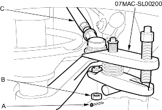
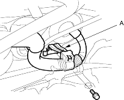
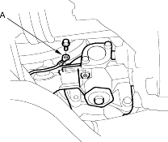
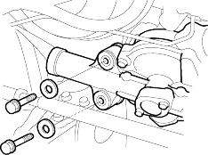

- Remove the cotter pin (A) from the 10 mm nut (B), and loosen the nut.

- Separate the tie-rod ball joint and damper steering arm using the special tool.
- Grasp the passenger's side tie-rod (C) and pull the rack all the way to the passenger's side (RHD: left direction, LHD: right direction), then remove the driver's side tie-rod end.
- For RHD vehicle's with CVT; disconnect the shift cable from the transmission (see step 11 on page 14-325). For RHD vehicle's with M/T; remove the clutch reservoir and reservoir bracket. Do not disconnect the clutch hose from reservoir (see page 12-6). For LHD vehicle's with M/T; disconnect the shift cable from the transmission (see step 8 on page 13-5).
- Remove the engine wire harness bracket (A).

- Under the steering gearbox, remove the ground cable terminal (A).

- Remove the steering gearbox attaching bolts and washers on the gearbox mounting bracket.
